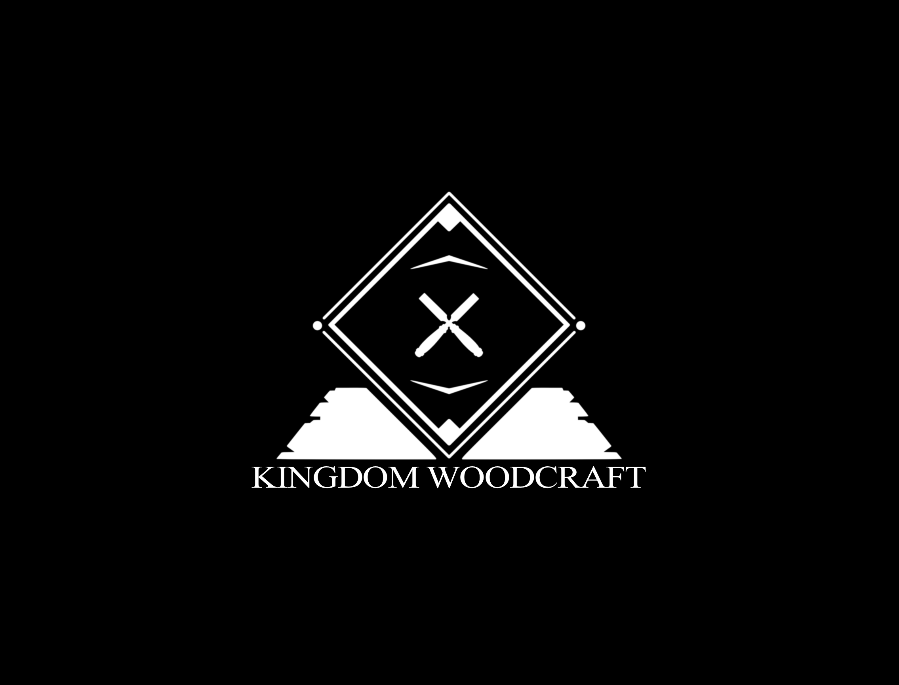

Project Snapshot
Primary Outcomes
- Ownership: migrated off WordPress + plugin bloat
- Performance: lightweight custom build for faster load
- Clarity: cleaner structure and navigation on mobile
- Measurement: GA4 + conversion events installed correctly